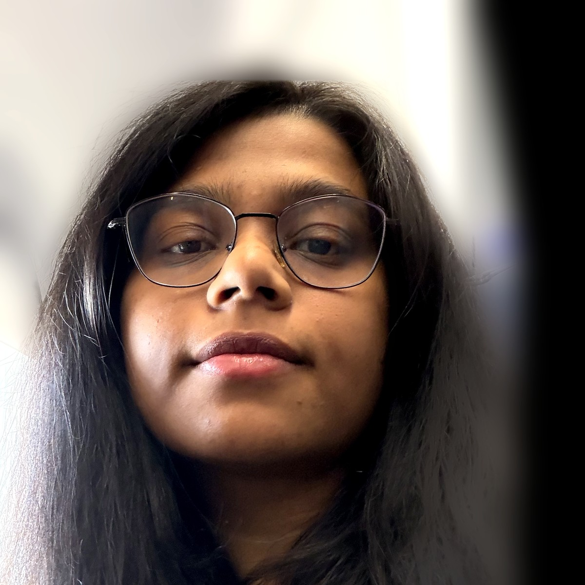

Fatima Salehbhai
Working at the intersection of product, engineering, and machine learning to build developer platforms and vision systems that hold up in the real world.
Experience
Lead Product Manager, AI Agents · Landing AI2024 – Present
Product-market fit discovery. Building foundation layers for unstructured data intelligence.
Sr. Product Manager, Visual AI Platform · Tesla2023 – 2024
Built the internal vision AI platform for model training and deployment.
Product Manager, Perception · SharkNinja Robotics2022
Owned 0 to 1 computer vision debris detection for premium robot vacuums.
Data Science Consultant · Mastercard Advisors2020 – 2021
Experimentation, ML modeling, and forecasting for banking and fintech clients.
Education
Carnegie Mellon University · MS, Integrated Product Development2022
IIT Bombay · M.Tech + B.Tech, Engineering2020